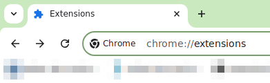
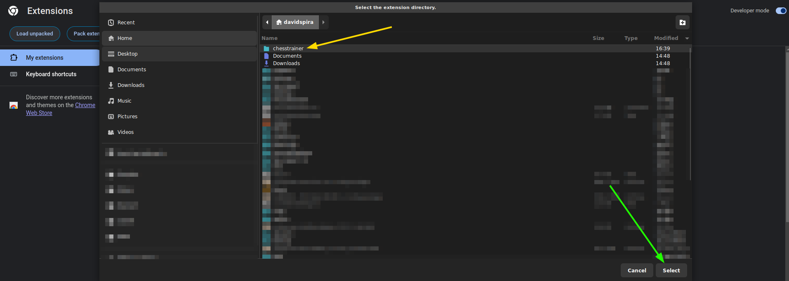
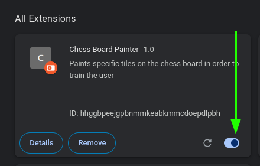

Frequently, strategies can be devised to make us learn to discriminate stimuli that, despite being there all the time, a person may have not, for one reason or another, learnt to notice and respond to.
In chess, it's usually frustrating for players to make mistakes that have nothing to do with strategy, but rather with failing to notice specific stimuli, such as, for instance, the position of the enemy bishop and its current range of attack, i.e., the tiles where he can attack.
The idea of this program is to train the user's eyes in a way that it begins to see cues on the board that would otherwise go unnoticed to them.
This is achieved by, first, directly showing them which tiles on the board can immediately be attacked by their opponent. The program does that by simples painting these tiles with some shade of red.
Now, it wouldn't be interesting at all to make the player dependent on such assistance, and that's why the next step is for the player, after a number of matches, to manually decrease the opacity of the red, i.e., to make it more transparent, less noticeable. In Behavioral Analysis, this is a technique called Fading, and the idea is that, after a few iterations of playing several matches and decreasing further the opacity, until it reaches zero, the user can "see" the colored tiles even when the program isn't running anymore. Something that could otherwise take a long time of regular, traditional chess practice, which would of course come with a lot of frustration.
The program exists in the form of an extension for Google Chrome and it runs on chess.com. It only works against Bot opponents. After developing your reading of the board with the tool, the user will be able to play against other players without needing it. Even on real non-virtual real-life boards.

3) On the top right corner, click on "Developer mode"
4) On the top left corner, click on "Load Unpacked", then browse to the folder extracted. Don't open the folder, just click on it once (yellow arrow) to select it then confirm (green arrow). See picture below.

5) The extension will appear on your list of extensions. Make sure it's activated (see green arrow below)

6) Now you can go to chess.com, and start a match "vs. Computer". Choose any bot, then you will see the buttons on the bottom left corner.
Click on the "Activate trainer" button. You will see an instruction message on the top part of the screen. You have to click Ok if you're playing with the white pieces, and Cancel if you're with the black ones.
The program will now paint all the tiles that your opponent can immediately attack, and the color it will use will depend on the value on the field below.
The number is the opacity. Setting it to 0 will make the tiles go back to normal, i.e., no overlay at all. Setting it to a high value will have them painted with a strong, very visible red. You can change the number and click "Set" during the match if you want to update the color.
No. While the highlighting of tiles will help you make less mistakes and, consequently, play better, it won't work against other players, only against chess.com's Bots. The idea is that, by following the path of playing many games with it and every now and then reducing the opacity further, you will begin to see the threats on the board even when not using the tool.
The style that's set up when you activate the tool is one of the styles offered by chess.com. The tool changes to this specific one because it's the one that offers the best contrast with the red-tinted tiles.
Unfortunately, it's not possible to predict when is the right moment, since each person will adapt to it differently. What is certain is that your vision of the board will get sharper as you get to lower and lower opacities.
It is recommended to use this program everyday and decrease the opacity every week, beginning with 30%, then, after a week, 20%, then 15%, 10%, 9%, 8%, 7% and so on, until 1%.
© 2024 Chess Trainer. All rights reserved.